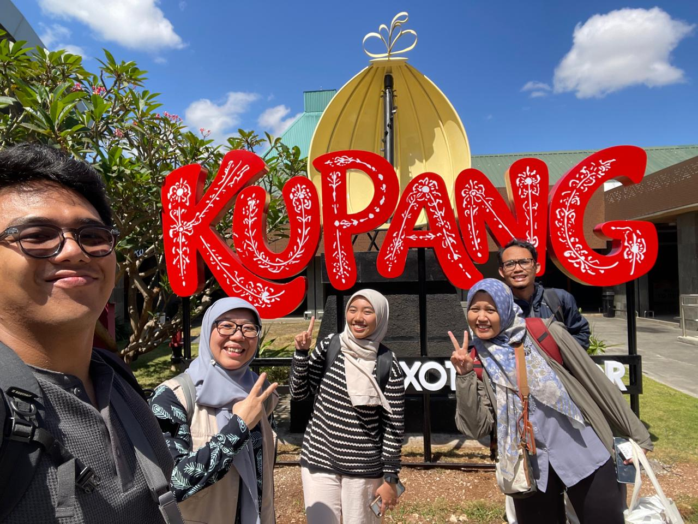
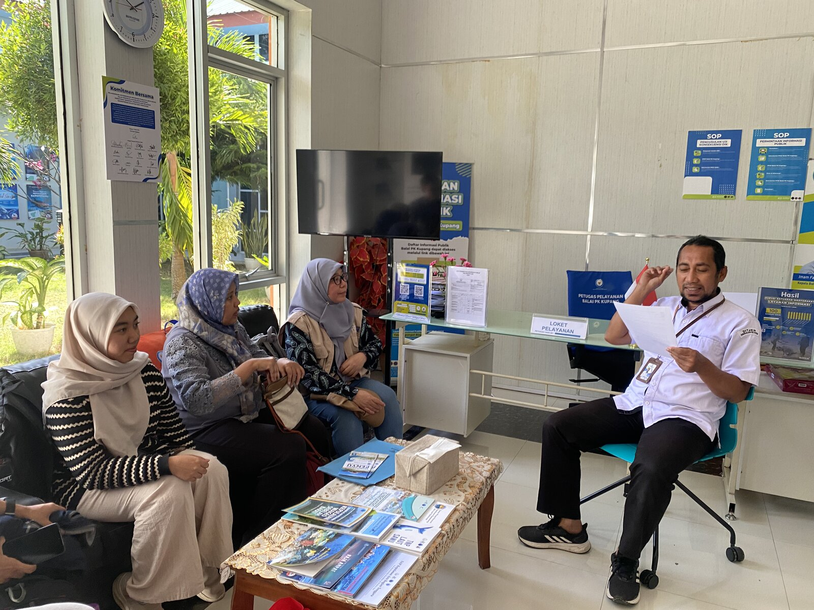
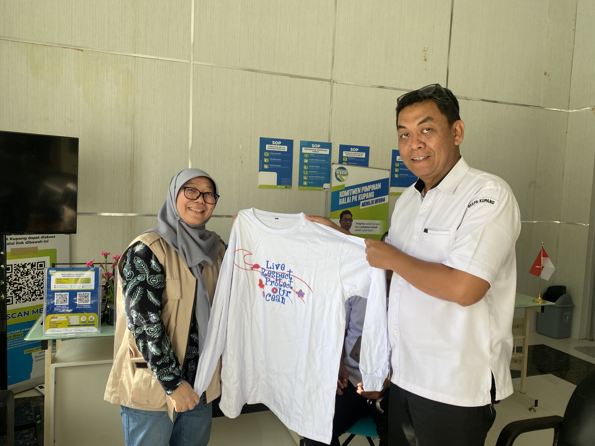
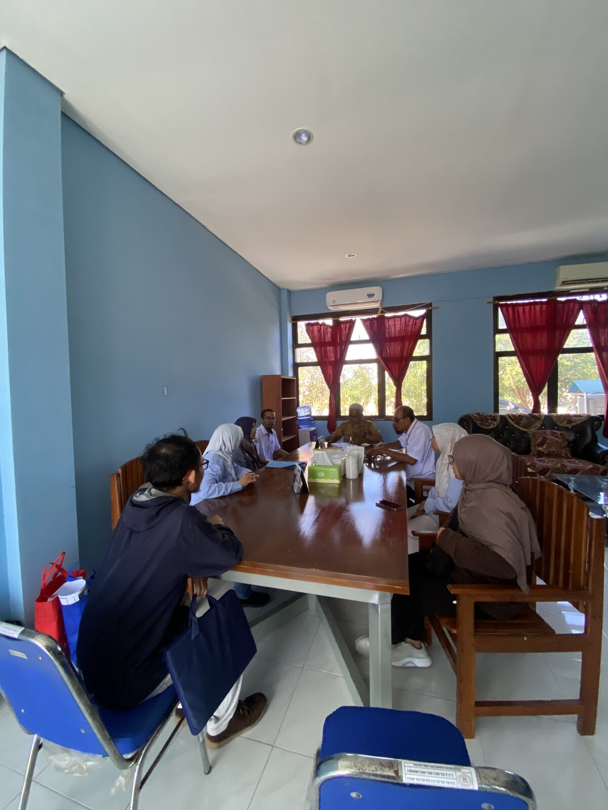
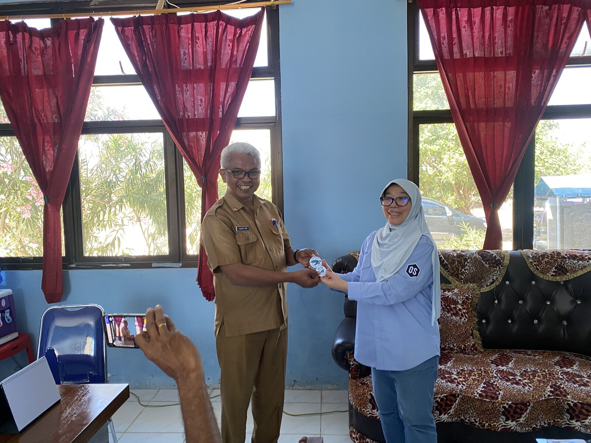

Tim Pengmas 2026 tiba di Kupang dan melakukan koordinasi awal dengan Balai Kawasan Konservasi Perairan Nasional (BKKPN) Kupang sebelum melanjutkan perjalanan ke lokasi kegiatan di Sabu Raijua.



Tim Pengmas 2026 melakukan koordinasi lanjutan dengan Balai Konservasi Sabu dan Dinas Kelautan dan Perikanan Sabu terkait pelaksanaan program monitoring dan konservasi penyu di Sabu Raijua.

